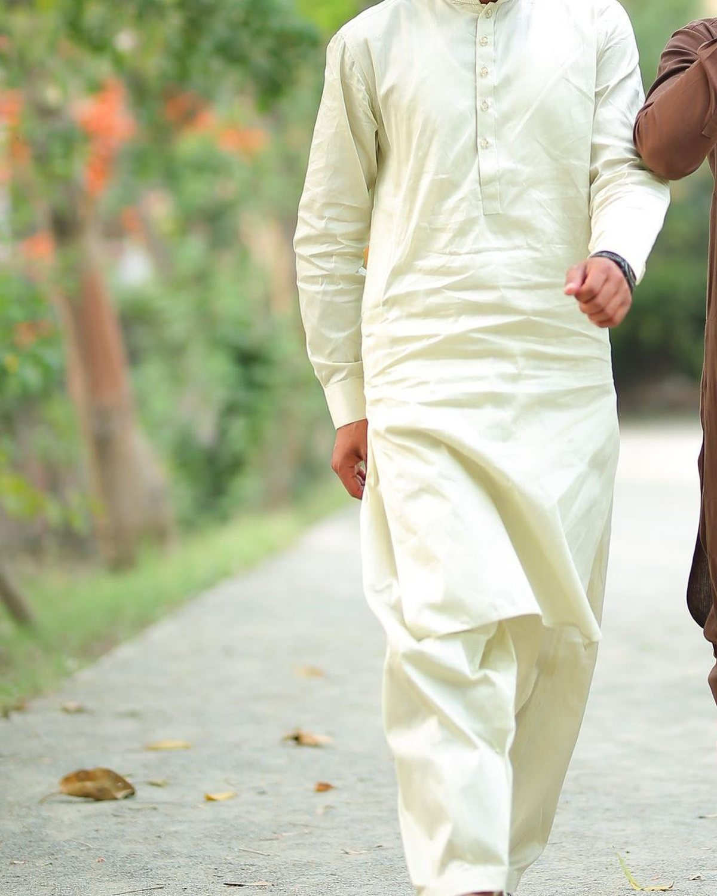
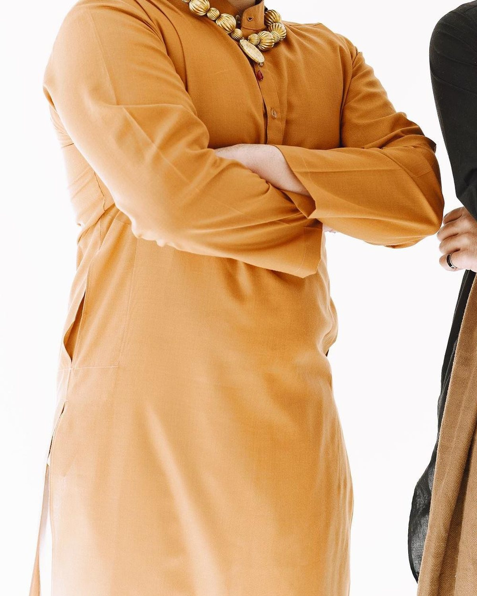

A STUDY IN GOOD DETAILS
Clean lines.
Worn your way.
A close look at cloth, buttons, chalk marks and stitching.
02 / GALLERY01THE FINE DETAILS
The details are
the whole point.
Buttons, stitches, chalk marks and cloth: the small things that make a good fit.





SHOW US WHAT YOU LIKE
Message the shop